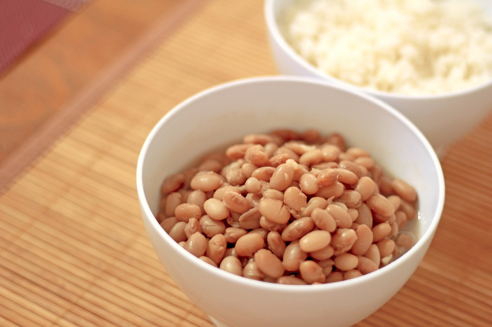

Rice and Beans
- 2 28oz cans pinto beans
- 1 28oz can crushed tomatoes
- 1-4 thick slices of cooked ham
- 2 green peppers, chopped
- 1 tomato, diced
- 1 white onion, minced
- 1 garlic clove, minced
- 1 tablespoon of Canola oil
- 8 cups white rice, cooked
Heat the Canola oil in a skillet. Dice your desired amount of ham and fry it in the skillet.
While the ham is cooking, combine onion, peppers, tomato, and garlic in a separate saucepan for 5 minutes.
After the ham begins to brown on all sides, transfer the ham into the saucepan with the veggies. Mix it all together and let the pan sit for 5 more minutes.
Then, add the cans of pinto beans and crushed tomatoes to the pan.
Let simmer for at least 1 hour.
Serve with white rice.